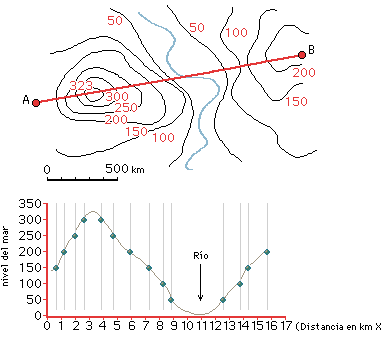

3.4 Perfil Topogràfic i Línia de Vista (Line-of-Sight)
Com generar el tall vertical del relleu entre dues estacions i verificar si el feix de telecomunicacions viatja lliure d'obstacles o si queda bloquejat per un cim intermedi.
💡 Línia de Vista (Line-of-Sight) en 2 conceptes directes:
Les antenes de telecomunicacions emeten ones que viatgen en línia recta, exactament com el feix de llum d'una llanterna:
- 👁️ «Si no et veig, no em connecto»: Si entre la torre emissora i l'ambulatori hi ha una muntanya al mig, el senyal xoca contra la roca i es perd. Cal que les dues antenes es «vegin» directament sense obstacles entremig.
- 📉 Com ho comprovem? Amb el perfil topogràfic: És un dibuix de la silueta de la muntanya de perfil per veure si la línia recta entre les antenes passa neta per l'aire.
Com s'Aixeca un Perfil Topogràfic?
Un perfil topogràfic és un tall transversal vertical del terreny al llarg d'una línia traçada entre dos punts A i B.
- Tall de corbes: Es col·loca una tira de paper mil·limetrat sobre el mapa unint el punt A i el punt B, i es marquen tots els punts on la línia talla una corba de nivell anotant-ne la cota.
- Eix d'altituds: Es projecta cada punt en un gràfic cartesià on l'eix horitzontal és la distància i el vertical és l'altitud en metres.
- Unió de punts: En unir els punts amb una línia contínua, obtenim la silueta exacta del relleu de la muntanya!

Mètode analògic d'enginyeria per aixecar un perfil topogràfic a partir del mapa de corbes.
Arrossega les dues torres (Torre A en cian i Torre B en morat) sobre el mapa topogràfic. Ajusta l'alçada dels mastelers per superar els obstacles del relleu andí i aconseguir connexió directa!
1) Augmentar l'alçada del màstil de les torres (de 25m a 40m o 50m).
2) Moure la ubicació de la torre a un cim adjacent més alt.
3) Instal·lar un repetidor intermedi per esquivar l'obstacle (Cas 2 de l'estudi de viabilitat).
Missió Tècnica: Reptes de Línia de Vista (LoS)
Configura les torres per superar els obstacles del terreny andí!
Amb les posicions de les dues torres que hi ha al mapa, el feix de ràdio queda tallat pel relleu. Modifica l'alçada dels mastelers (Torre A i Torre B) o mou les torres lleugerament fins que obtinguis 🟢 Línia de Vista Neta (LoS OK).
Observa la casella «Desnivell (Δh)» a la barra de lectures superior. Quin valor indica actualment entre la base de la Torre A i la Torre B?
Si entre l'ambulatori i l'escola hi ha una muntanya molt alta que requeriria una torre de més de 100 metres (inviable econòmicament i estructuralment), quina és la solució estàndard de cooperació?